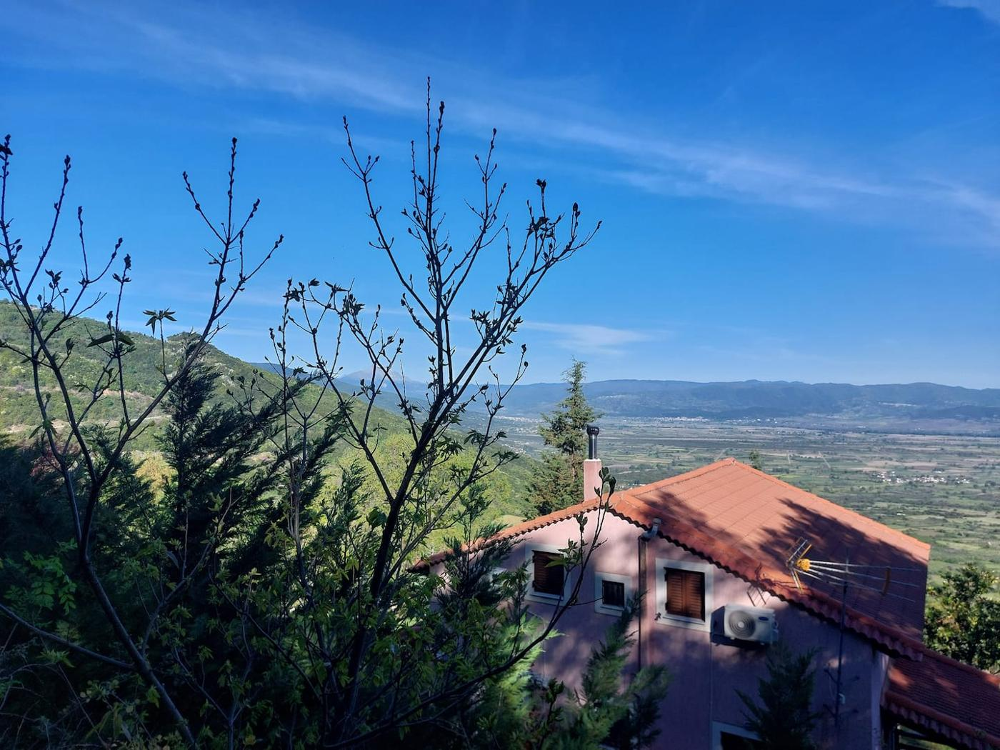
01
Πρωινό με θέα την κοιλάδα
Ο πρώτος καφές στο μπαλκόνι. Η ομίχλη σηκώνεται αργά από την κοιλάδα του Σπερχειού και ακούγονται μόνο τα πουλιά στις καστανιές. Τα πρωινά εδώ δεν βιάζονται.
Υπάτη · Όρος Οίτη
Ένα ξύλινο σαλέ σε κτήμα έντεκα στρεμμάτων, με θέα σε όλη την κοιλάδα. Εδώ ο χρόνος κυλάει αλλιώς.
Η εμπειρία
Δεν είναι απλώς ένα σπίτι για να μείνετε. Είναι ένας τρόπος να περάσετε τη μέρα σας, από τον πρώτο καφέ ως την τελευταία σπίθα στο τζάκι.

Ο πρώτος καφές στο μπαλκόνι. Η ομίχλη σηκώνεται αργά από την κοιλάδα του Σπερχειού και ακούγονται μόνο τα πουλιά στις καστανιές. Τα πρωινά εδώ δεν βιάζονται.
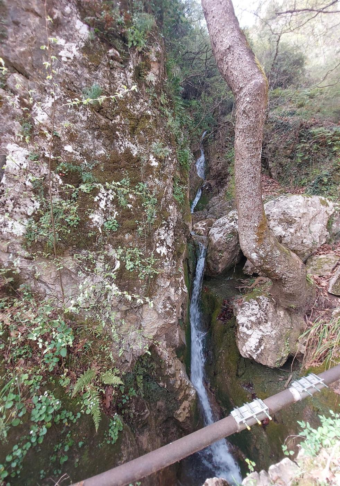
Βγείτε από την πόρτα και πάρτε το μονοπάτι. Σε λίγα λεπτά είστε μέσα στο ελατοδάσος της Οίτης, δίπλα σε καταρράκτες, ή ανεβαίνετε ως το καταφύγιο. Το απόγευμα, ένα ζεστό μπάνιο στα Λουτρά Υπάτης.
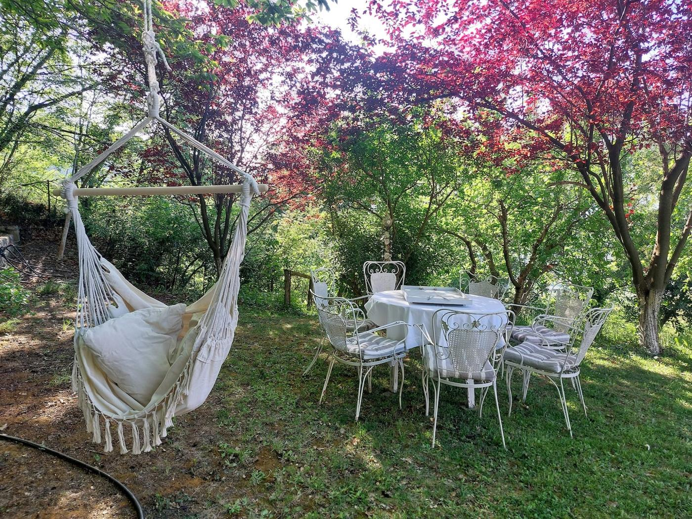
Έντεκα στρέμματα με αμπέλι, καρυδιές, λαχανόκηπο και καστανιές. Μια αιώρα κάτω από τα δέντρα, ξαπλώστρες με θέα και πινγκ πονγκ κάτω από τα δέντρα.
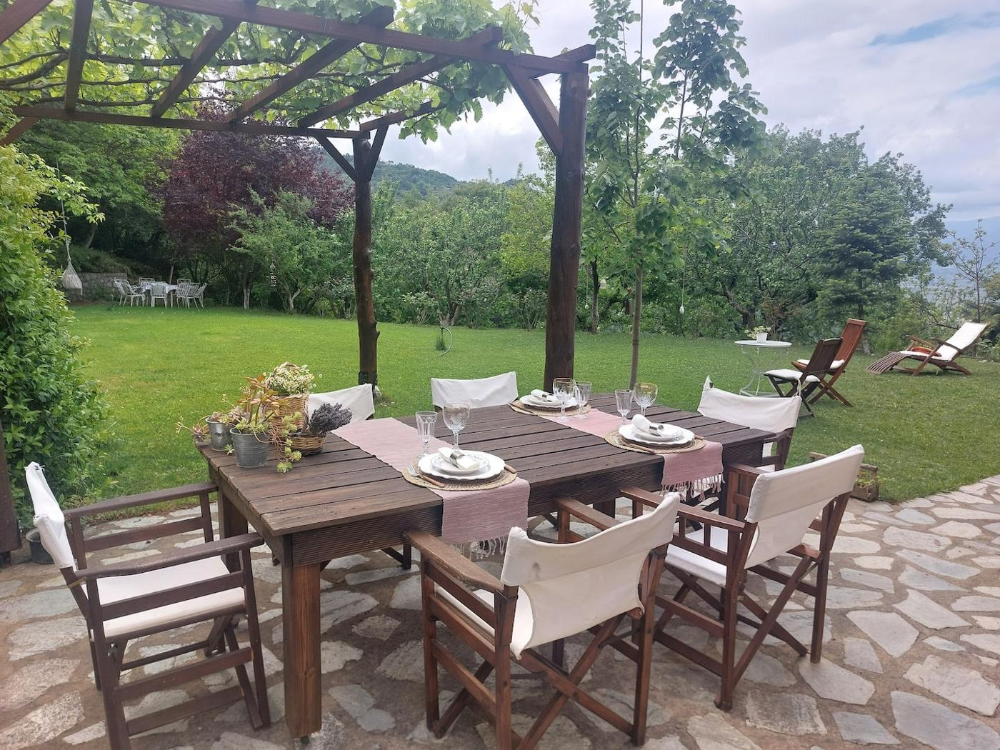
Ανάψτε το μπάρμπεκιου, στρώστε το τραπέζι στον κήπο και μείνετε έξω ώσπου να βγουν τα αστέρια.
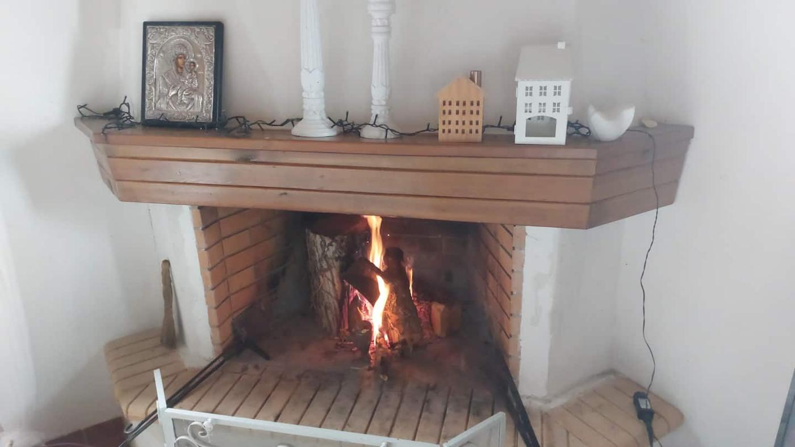
Όταν πέφτει η θερμοκρασία, ανάβει το τζάκι. Ένα ποτήρι κρασί, ένα επιτραπέζιο, μερικές νότες στο πιάνο. Έξω, μόνο το δάσος.
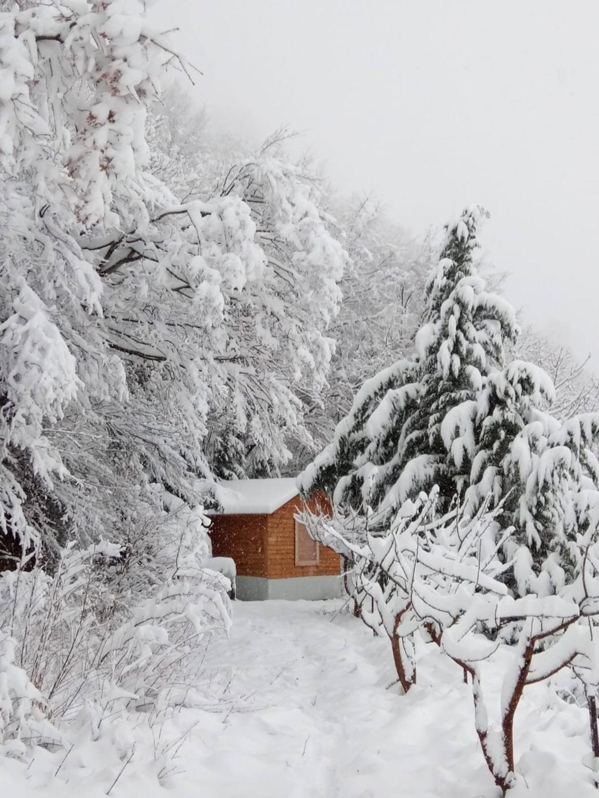
Όταν χιονίζει, το κτήμα ντύνεται στα λευκά και το δάσος σωπαίνει. Βόλτα στα χιονισμένα έλατα, σκι στον Παρνασσό ή στο Καρπενήσι, και επιστροφή στο ζεστό σπίτι με το τζάκι αναμμένο. Για το τέλος της μέρας, ένα ζεστό μπάνιο στα Λουτρά Υπάτης.
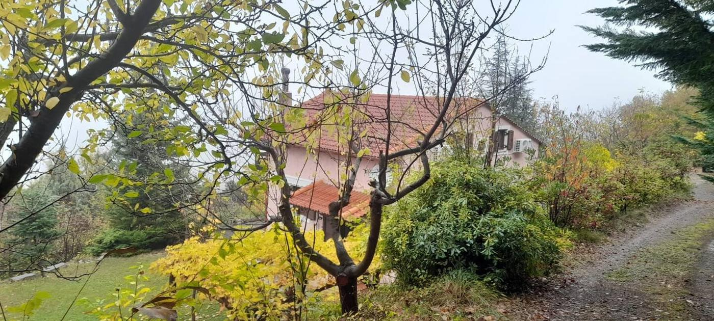
Το δάσος γεμίζει κόκκινα και χρυσά χρώματα και η ομίχλη τυλίγει τα έλατα. Μαζέψτε κάστανα και καρύδια από τα δέντρα του κτήματος, ψήστε τα στο τζάκι και απολαύστε τα με ένα ζεστό τσάι του βουνού.
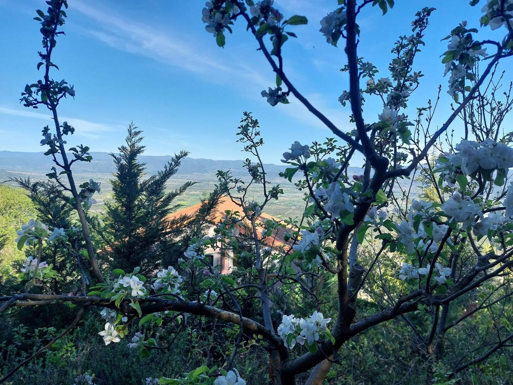
Οι μηλιές και οι κερασιές του κτήματος γεμίζουν λευκά λουλούδια και τα λιβάδια βάφονται με αγριολούλουδα. Ο αέρας μυρίζει άνοιξη, οι καταρράκτες κατεβάζουν νερό από το λιωμένο χιόνι και η κοιλάδα απλώνεται πράσινη κάτω από το μπαλκόνι.
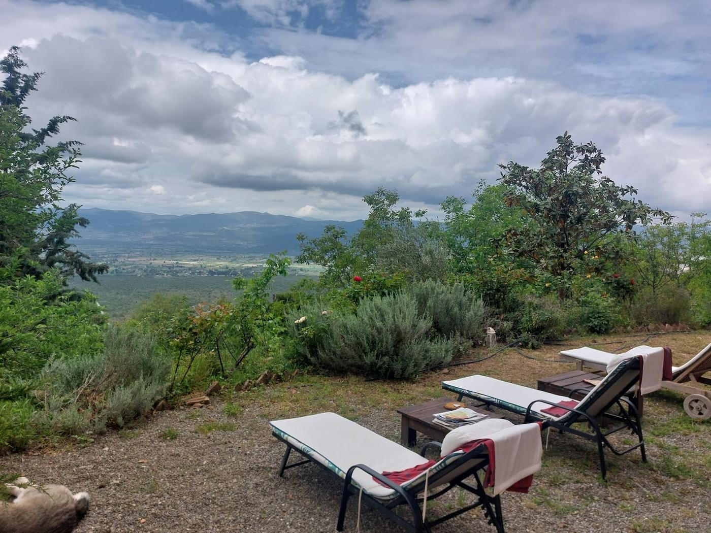
Όταν η πόλη καίγεται, εδώ φυσάει το δροσερό αεράκι της Οίτης. Ξαπλώστρες στον ίσκιο των δέντρων, ντους στον κήπο, φρούτα από τα δέντρα και βραδιές έξω κάτω από τα αστέρια. Και αν σας λείψει η θάλασσα, πάρτε τα είδη παραλίας του σπιτιού για μια μέρα στις παραλίες του Μαλιακού.
Το σπίτι
Στο ισόγειο βρίσκονται η τραπεζαρία και το σαλόνι με το τζάκι, η κουζίνα, ένα μπάνιο και ένα υπνοδωμάτιο. Από την κουζίνα, μια μπαλκονόπορτα βγάζει σε μπαλκόνι με όμορφη θέα στον κήπο και στο δάσος.
Μια σκάλα οδηγεί στον επάνω όροφο, με δεύτερο σαλόνι, μπάνιο, δύο υπνοδωμάτια και μια υπέροχη θέα από το μπαλκόνι.
Το σπίτι βρίσκεται σε κτήμα έντεκα στρεμμάτων με αμπέλι, καρυδιές, λαχανόκηπο και καστανιές, όπου οι επισκέπτες έχουν ελεύθερη πρόσβαση.
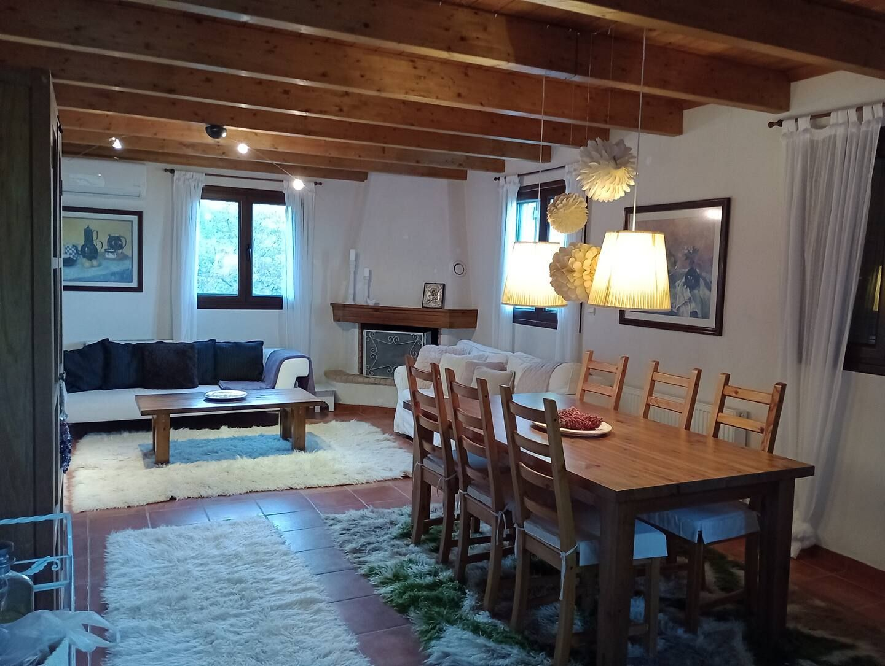
Επίσης: βρεφικό κρεβάτι κατόπιν αιτήματος, ντους εξωτερικού χώρου, ιδιωτική είσοδος.
Φωτογραφίες
Όλο τον χρόνο
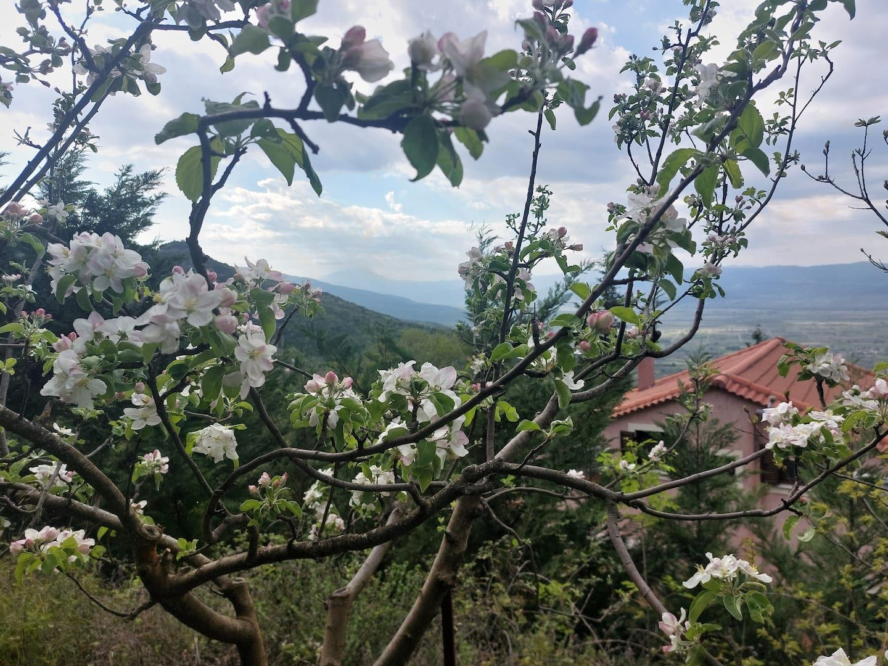


Η περιοχή
Ιαματικές πηγές με ζεστά νερά, λίγα χιλιόμετρα από το χωριό. Ιδανικές τον χειμώνα.
Ελατοδάση, καταρράκτες, αλπικά λιβάδια και σημαδεμένα μονοπάτια για κάθε επίπεδο πεζοπόρου.
Το ιστορικό μοναστήρι στα 4 χλμ. και η θρυλική γέφυρα του Γοργοποτάμου στα 8 χλμ.
Θερμοπύλες, Καρπενήσι, Δελφοί, Αράχωβα, το χιονοδρομικό του Παρνασσού και τα Μετέωρα.
Πεζοπορία & εκδηλώσεις
Η Υπάτη είναι η «πύλη» της Οίτης. Από το χωριό ξεκινούν πολλά σημαδεμένα ορειβατικά μονοπάτια μέσα στον Εθνικό Δρυμό, για απλούς περιπάτους αλλά και για έμπειρους ορειβάτες.
Οι ημερομηνίες αλλάζουν κάθε χρόνο. Ρωτήστε τη Γωγώ για ό,τι γίνεται την περίοδο της διαμονής σας.
Τοποθεσία
Αποστάσεις οδικώς, κατά προσέγγιση.
Διαθεσιμότητα
Δείτε ποιες μέρες είναι διαθέσιμες για τη διαμονή σας.
Για οποιαδήποτε ερώτηση, στείλτε μήνυμα στη Γεωργία (Γωγώ) στο WhatsApp ή με email, ή πάρτε τηλέφωνο.
Θα μας βρείτε και στο Airbnb, με βαθμολογία 5,0 ★ · Δείτε την αγγελία